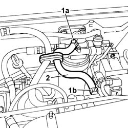

1040B42 filter/carburettor line - r r
- Path
- Procedures > 10 ENGINE > 1040 FUEL TANK AND PIPES > 1040B fuel supply/return circuit pipe > 1040B42 filter/carburettor line - r r
- Kind
- repair procedure (removal / refitting; the operation number is the code)
- Applies to
- engines: 1.9 JTD 8V; all production periods
- Interactive page
- https://sloeber94.github.io/elrnDB-a147/en/#/3025012
Applies to: engines: 1.9 JTD 8V; all production periods
 Removing
Removing
 Refitting
Refitting1016A10 sound-proofing cover - r + r
1. Disconnect pipe from quick release fitting (1a) on the the filter and connector (1b) on the return manifold.
2. Remove the supply pipe from the filter to the return manifold.

Applies to: engines: 1.9 JTD 8V; all production periods
Refitting
RemovingPosition the delivery pipe and connect to the fuel filter and fuel manifold.